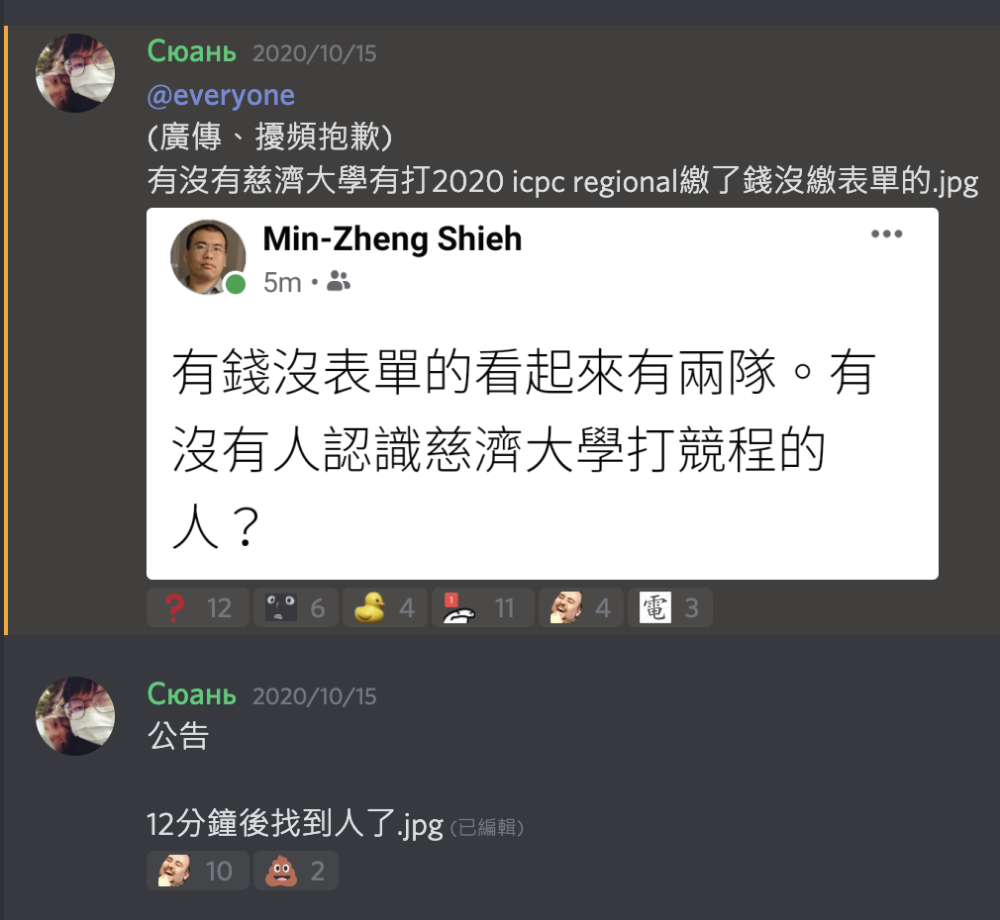

回顧 2020 總結 ＆ 2021 開局
又一年飛逝了，不知道 2020 的大家過得好不好？
但總覺得 2020 的我比起往年，似乎沒有好到哪裡去
一月 Jan
比較有印象的話，那時的我準備要做專題，那時課業也不太重。
組員雖然找好了，但誰知我組員一位陸生回家一趟後就回不了台灣了。
原本要參加交大的程式解題集訓，但前兩天直接宣佈取消 ヽ(#`Д´)ﾉ
可以說是疫情打亂一切啊！
二月 Feb ~ 六月 Jun
又是 26 學分的人生，系上 16 學分 + 師培 10 學分，也不知道我怎麼混過去了，雖然只是感覺好像又過了忙碌的學期。
專題目前那時算是一顆未爆彈，進度到後面有時候會有點跟不太上，跟組員或教授交談有時候會有種溝通障礙，會有點突然就聽不懂想法，但又不知道從何問起。
七月 Jul ~ 八月 Aug
暑假嘛！除了專題以外就是史懷哲營隊了吧！
史懷哲營隊對我來說是大學生涯中認識最多朋友的一次吧！
有點意外的是，修課還跟所有同學不熟（交集基本為 0）
但暑期集訓中旬以後就變得超熟。
每次在路上看到夥伴們都還會停下來寒暄幾句（我對系上的同學都不一定會這樣）
喔對 BTW，還有那逢甲大學辦超爛的 NCPU 2020（直接被我歸類為糞校），明年 NCPU 聽 MZ 說要自己拿回來舉辦了，據說今年被罵超慘ㄏㄏ。
雖然不是說 MZ 辦的多好，但至少沒有出事的比賽就是一場不錯的比賽，至少不會到現場才跟你改比賽環境 @@
至於 NCPU 2020 當天出了什麼事，我已經詳細寫在這篇文章裡面了。
九月 Sep ~ 十月 Oct
明明只有 9 學分，卻忙碌的跟 26 學分一樣 @@
十月比較好笑就是，我忙到只有繳交比賽費，忘記填寫表單
直到某一天就在 Discord 加入的社群被廣播……

十一月 Nov ~ 十二月中旬 Dec. Mid
很驚喜的就是，我在 ICPC 2020 Taipei Regional 拿到了銅牌獎。
大學生涯最後一場 ICPC，不曉得明年還能不能參加就是了，但是專題也陷入了趕進度的困境，後期也過得超黑暗。
不過所幸專題還是過了，也拿了很意外的名次，專題競賽第一名。
2021 一月 2021 Jun
大學第一科被送下去的科目也出來了（對，我努力撐很久才出現第一科被當掉），主要真的是因為專題忙不過來，反正就給她當掉吧。
參與了 AWS Gameday 2021，詳細內容也寫在這篇文章裡面了。
總結
「每一次，每一年，我們都會說新年要有新希望，
要有新的改變，可是經過了 2020 這樣子的一年之後，
突然發現，突然發現，沒有改變，
好像就是最幸福的一件事了。」
—— 五月天 2020.12.31
我用這句話來總結 2020，一定要好好珍惜現在所在的人事物。